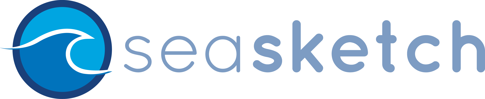
Ocean GeoDesign using Real-time Web Technologies
Chad Burt
University of California Santa Barbara
North Coast2010
South Coast2009
Central Coast2005-2007
North-Central Coast2008
Marine Life Protection Act Initiative Study Regions
 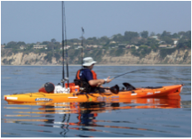
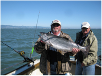
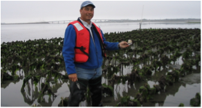
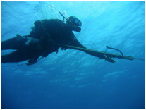
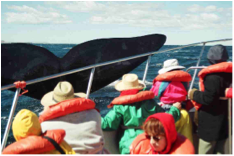
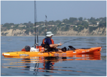
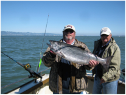
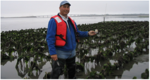
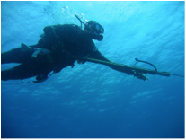
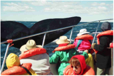
129 MPA's Created (16% State Waters)
That's GeoDesign!
Offer came to fund new project from Jack Dangermond
- Critical time, as we were having trouble repurposing MarineMap
- Two main sources of trouble
- KML
- Nature of our code framework
MarineMap is an Open Source Code Framework
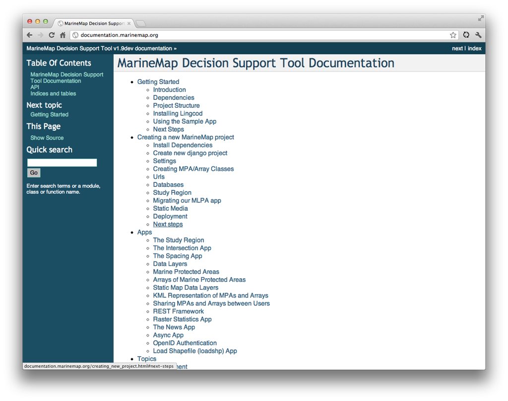 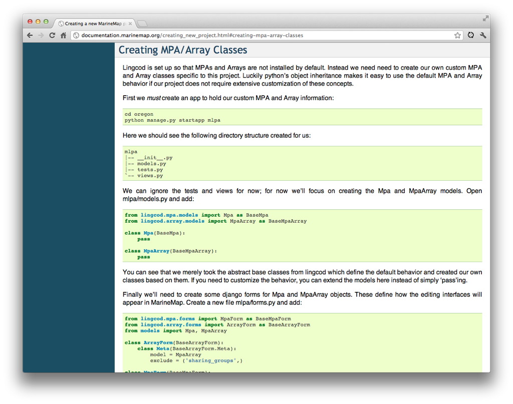That means you generate a lot of code!
A growing codebase to maintain
NorthCoast MarineMap 7.2
Washington MarineMap 11
Oregon MarineMap 10
NPS MarineMap 3
Vertical Slides
Slides can be nested inside of other slides,
try pressing down.
Basement Level 1
Press down or up to navigate.
Basement Level 2
Cornify

Basement Level 3
That's it, time to go back up.
Holistic Overview
Press ESC to enter the slide overview!
Works in Mobile Safari
Try it out! You can swipe through the slides pinch your way to the overview.
Transition Styles
You can select from different transitions, like:
Marvelous Unordered List
- No order here
- Or here
- Or here
- Or here
Fantastic Ordered List
- One is smaller than...
- Two is smaller than...
- Three!
Global State
Set data-state="something" on a slide and "something"
will be added as a class to the document element when the slide is open. This let's you
apply broader style changes, like switching the background.
"blackout"
"soothe"
Custom Events
Additionally custom events can be triggered on a per slide basis by binding to the data-state name.
Reveal.addEventListener( 'customevent', function() {
console.log( '"customevent" has fired' );
} );
Clever Quotes
These guys come in two forms, inline:
The nice thing about standards is that there are so many to choose from
and block:
For years there has been a theory that millions of monkeys typing at random on millions of typewriters would reproduce the entire works of Shakespeare. The Internet has proven this theory to be untrue.
Pretty Code
function linkify( selector ) {
if( supports3DTransforms ) {
var nodes = document.querySelectorAll( selector );
for( var i = 0, len = nodes.length; i < len; i++ ) {
var node = nodes[i];
if( !node.className ) ) {
node.className += ' roll';
}
};
}
}
Courtesy of highlight.js.
Intergalactic Interconnections
You can link between slides internally,
like this.
Fragmented Views
Hit the next arrow...
... to step through ...
any type- of view
- fragments
Spectacular image!